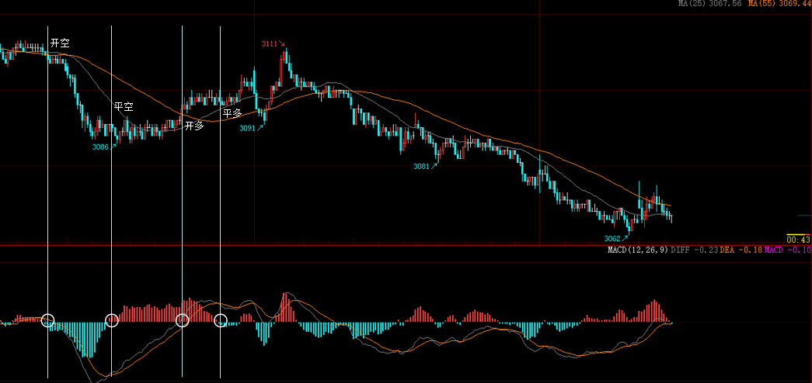

策略编写
本页以一个简单的基于 MACD 指标的策略为例，详细介绍了如何使用 LeopardSeek 编写策略。
策略逻辑
当 MACD 指标中，根据 DIFF 与 MACD 值的正负性判断开仓方向，如果 DIFF 与 MACD 同为正，则开多仓。若其一不再为正值，则平多仓。反之，若 DIFF 与 MACD 同为负，则开空仓。若其一不再为负值，则平多仓。
一组多方向的交易与一组空方向的交易示例如下图所示 
策略编写
LeopardSeek 中的策略以类对象的形式构建。这些类对象包含将市场数据转换为交易信号所需的核心逻辑。一般而言，策略类会接收交易标的名称和策略参数完成实例化，当然您可以通过策略配置文件自定义传入的参数内容。
策略配置
策略配置文件用于定义该策略的所有参数，以及该策略要交易的目标品种。配置文件中 PARAMETERS 字段下的参数会被传入你的策略类中，供你在策略逻辑里调用。
用户在文件根目录下的 config 文件夹中创建于修改与策略同名的 yaml 文件，用来编辑策略配置。
# macd.yaml
NAME: 'macd' # 策略名
MODULE: 'macd' # 策略所在模块（与策略名保持一致）
CLASS: 'MACD' # 策略类名
INTERVAL: '5min' # 策略执行周期
PARAMETERS: # 策略参数
macd_fast: 12
macd_slow: 26
macd_smoothing: 9
WATCHLIST: ['ao2605'] # 策略执行的资产代码
类的实现
尽管策略的构建方式极为灵活，但策略类必须包含 init 初始化方法和一个名为 generate_signal 的信号生成方法。其中，init 方法会在每次实例化策略时被调用。
默认情况下，LeopardSeek 实例化策略时会传入四个命名参数：
- 该次实例化中要交易的资产代码（参数名：instrument， 参数类型：str）；
- 策略参数（参数名：parameters， 参数类型：dict）；
- 交易所接口（参数名：broker， 参数类型：Broker）；
- 本资产代码专用的日志（参数名：logger， 参数类型：logging.Logger）。
除 init 方法外，策略类必须实现 generate_signal 方法。每个策略执行周期，LeopardSeek 会调用该方法，且要求该方法返回一个交易委托单（Order）对象或委托单列表：
做多委托单可通过创建 Order 对象时指定 direction=Direction.Long 实现，做空委托单则指定 direction=Direction.Long。LeopardSeek 中提供了诸多便捷的枚举，详细定义请阅读下单。
若本次数据更新无交易信号，可直接返回 None 或者空列表([ ])；
import pandas as pd
import numpy as np
import talib as ta
from datetime import datetime
from logging import Logger
from autotrader.strategy import Strategy
from autotrader.brokers.broker import Broker
from autotrader.comms.Enum import Direction, Offset, OrderType, CandlesPeriod, PosDirection
from autotrader.brokers.lzdc_order import Order
class MACD(Strategy):
def __init__(
self, parameters: dict, instrument: str, broker: Broker, logger: Logger, *args, **kwargs
) -> None:
self.name = "MACD"
self.instrument = instrument
self.broker = broker
self.parameters = parameters
self.logger = logger
# 从self.parameters中获取计算需要的参数
self.fast_period = self.parameters.get('macd_fast', 12)
self.slow_period = self.parameters.get('macd_slow', 26)
self.macd_period = self.parameters.get('macd_smoothing', 9)
# 初始化策略运行需要属性
self.previous_diff = None
self.previous_macd = None
交易信号的生成
针对 MACD 交易策略，此方法可将策略规则转化为代码实现。
以下为此 MACD 示例策略的总览，包括了获取行情信息，交易信号判断，订单生成等多个部分。每个部分的细节见本文档的其他介绍。
def generate_features(self, dt):
"""
生成基于MACD的趋势信号
"""
# 获取价格数据, 本次调用获取了本产品1000根1分钟级的k线数据
df = self.broker.get_candles(self.instrument, granularity=CandlesPeriod.MIN_1, count=1000, end_time=dt)
close = df['close']
current_price = close.iloc[-1]
ema20 = ta.EMA(close, self.fast_period)
ema80 = ta.EMA(close, self.slow_period)
DIFF = ema20 - ema80
DEA = ta.EMA(DIFF, self.macd_period)
MACD = (DIFF - DEA)
latest_fix_diff = DIFF[-2]
latest_fix_macd = MACD[-2]
signal = 0
if latest_fix_diff > 0 and latest_fix_macd > 0:
signal = 1
elif latest_fix_diff < 0 and latest_fix_macd < 0:
signal = -1
self.previous_diff = latest_fix_diff
self.previous_macd = latest_fix_macd
return signal
def generate_signal(self, dt) -> int:
"""
生成交易信号
"""
# 获取持仓信息
holding_direction = 0
holding_size = 0
current_profit = 0
position_dicts = self.broker.get_positions(self.instrument)
if position_dicts:
for position_dict in position_dicts:
if position_dict["direction"] == PosDirection.Long: # 多头
current_profit = position_dict['positionProfit']
holding_direction = 1
holding_size = position_dict['position']
elif position_dict["direction"] == PosDirection.Short: # 空头
current_profit = position_dict['positionProfit']
holding_direction = -1
holding_size = position_dict['position']
# 通过generate_features生成趋势信号
signal = self.generate_features(dt)
# 通过日志记录交易信号
self.logger.info(f'交易信号{signal}')
# 获取最新价格
df = self.broker.get_candles(self.instrument, granularity=CandlesPeriod.MIN_1, count=1000, end_time=dt)
close = df['close']
current_price = close.iloc[-1]
orders = []
# 多头持仓情况
if holding_direction == 1:
# 若趋势方向不为多头，平多仓：
if signal != 1:
close_long_tdposition = Order(
instrument=self.instrument,
direction=Direction.Short,
offset=Offset.Close,
order_type=OrderType.Market,
price=current_price,
size=holding_size
)
orders.append(close_long_tdposition)
if signal == -1:
orders.append(Order(
instrument=self.instrument,
direction=Direction.Short,
offset=Offset.Open,
order_type=OrderType.Market,
price=current_price,
size=1
))
# 空头持仓情况
elif holding_direction == -1:
# 若趋势方向不为空头，平空仓：
if signal != -1:
close_short_tdposition = Order(
instrument=self.instrument,
direction=Direction.Long,
offset=Offset.Close,
order_type=OrderType.Market,
price=current_price,
size=holding_size
)
orders.append(close_short_tdposition)
# 若有趋势为多，开多仓
if signal == 1:
orders.append(Order(
instrument=self.instrument,
direction=Direction.Long,
offset=Offset.Open,
order_type=OrderType.Market,
price=current_price,
size=1
))
# 若有趋势方向
else:
if signal == 1:
self.logger.info('开多仓')
orders.append(Order(
instrument=self.instrument,
direction=Direction.Long,
offset=Offset.Open,
order_type=OrderType.Market,
price=current_price,
size=1
))
elif signal == -1:
self.logger.info('开空仓')
orders.append(Order(
instrument=self.instrument,
direction=Direction.Short,
offset=Offset.Open,
order_type=OrderType.Market,
price=current_price,
size=1
))
return orders